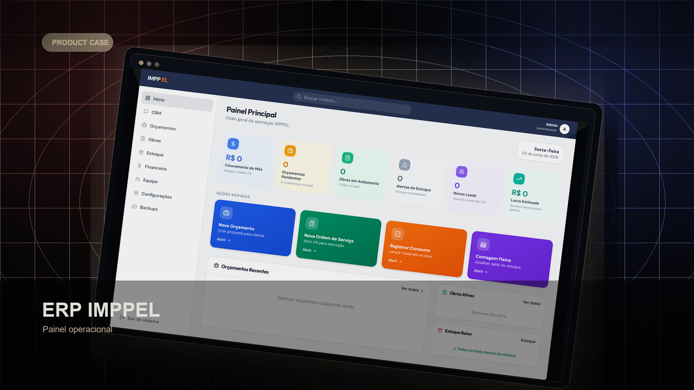
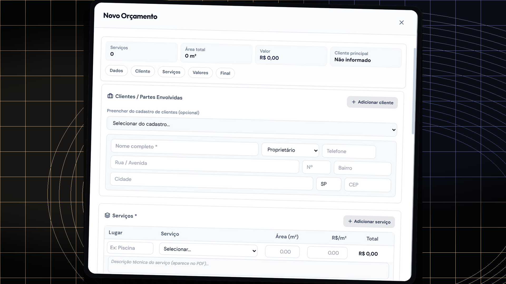
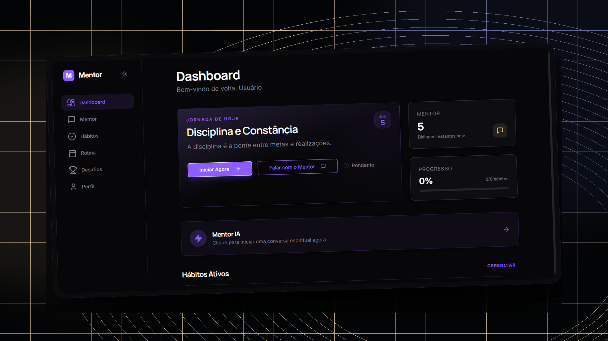
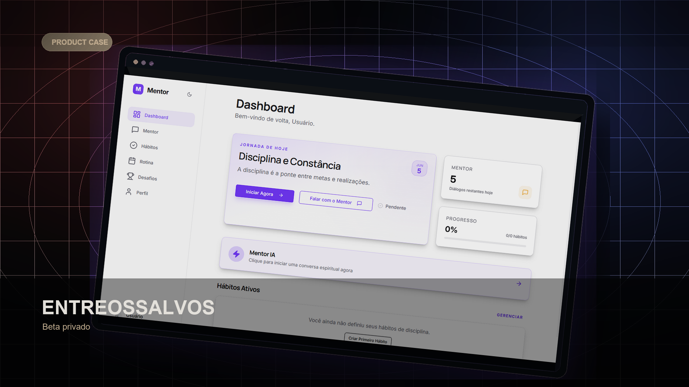
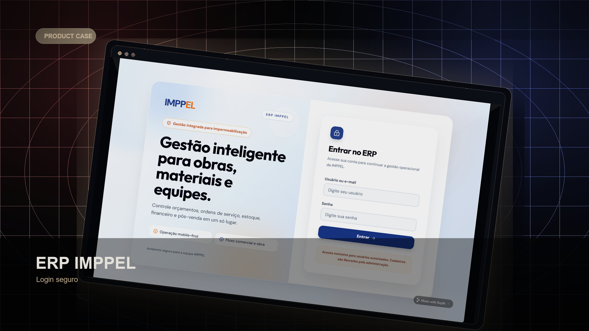
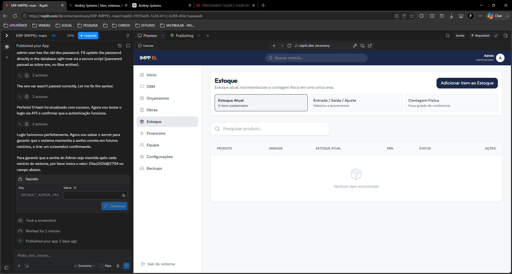

Sites profissionais
Para empresas que precisam parecer confiáveis e transformar visitantes em contatos.
Resultado: presença digital clara, bonita e pronta para vender.Software sob medida
Transformo processos manuais em sistemas digitais simples, bonitos e funcionais.
Serviços
Do primeiro contato ao pós-entrega, o foco é criar uma solução bonita, clara e útil para a rotina da sua empresa.
Para empresas que precisam parecer confiáveis e transformar visitantes em contatos.
Resultado: presença digital clara, bonita e pronta para vender.Para campanhas, bio do Instagram, lançamentos e serviços com chamada direta.
Resultado: página objetiva para gerar conversas e pedidos de orçamento.Para negócios que precisam controlar estoque, pedidos, produção e relatórios.
Resultado: operação mais organizada e menos dependente de improviso.Para empresas que repetem tarefas, copiam dados e perdem tempo em processos manuais.
Resultado: menos retrabalho e mais velocidade na rotina.Para quem já tem site ou sistema e precisa de ajustes, melhorias e acompanhamento.
Resultado: evolução contínua sem deixar o projeto parado.Para quem sabe que a operação está confusa, mas ainda não sabe o que construir.
Resultado: clareza sobre processos, prioridades e solução ideal.Por que escolher
A Andrey Systems não entrega apenas uma tela bonita. O trabalho começa entendendo a operação e termina com uma solução que pode evoluir junto com a empresa.
Cada projeto nasce da rotina do cliente, não de um pacote genérico.
O objetivo é resolver gargalos de organização, venda, controle e comunicação.
O ERP IMPPEL valida a capacidade de construir sistemas com módulos conectados.
Fluxos pensados para conectar atendimento, orçamento, estoque, execução e financeiro.
Acompanhamento para ajustes, melhorias e orientação depois que o projeto sai do papel.
Sistemas podem crescer com novos módulos, novas regras e novas integrações.
Como funciona
Você não precisa chegar com tudo pronto. A conversa começa pelo problema, passa pelo planejamento e vira uma entrega prática para o seu negócio.
Entendo sua empresa, sua rotina e o que hoje está travando crescimento ou organização.
Defino o melhor caminho: site, landing page, sistema, ERP, automação ou consultoria.
Construo a solução com visual profissional, estrutura clara e foco em uso real.
Você recebe a solução pronta, com ajustes finais e orientação para usar ou publicar.
Para quem é
A Andrey Systems atende empresas que querem organizar processos, melhorar a presença digital e transformar rotinas manuais em ferramentas confiáveis.
Projetos
Projetos e modelos pensados para mostrar clareza, organização e resultado comercial.


ERP IMPPEL

SaaS em desenvolvimentoCase principal
Um ERP criado para centralizar informações, organizar módulos internos e dar mais controle para uma operação que dependia de processos manuais.


Informações espalhadas, controles manuais e baixa visibilidade sobre etapas internas.
ERP sob medida com fluxos conectados, módulos objetivos e navegação simples.
Mais de 7 módulos conectando CRM, orçamentos, OS, materiais, estoque, garantia e financeiro.
Mais controle, menos retrabalho e uma operação preparada para crescer com organização.
Fluxo operacional
O ERP foi pensado para conectar etapas que antes ficavam separadas. A empresa passa a ter um caminho mais claro para registrar, acompanhar e consultar informações.
React, TypeScript, Node.js, rotas internas, componentes reutilizáveis e estrutura modular.
CRM, orçamento, OS, materiais, estoque, garantia e financeiro trabalhando em fluxo conectado.
Projeto pensado para operação real, evolução contínua e inclusão de novos módulos.
Projetos em desenvolvimento
Aplicativo focado em crescimento pessoal, hábitos, desafios e evolução diária. O projeto reforça a atuação da Andrey Systems também em produtos digitais próprios.
Resultados
Mesmo sem prometer números mágicos, uma solução bem construída muda a forma como a empresa registra, acompanha e decide.
Sobre Andrey
Fundador da Andrey Systems
Sou Andrey, fundador da Andrey Systems. Crio sites, sistemas, ERPs e automações para transformar operações manuais em soluções digitais claras, bonitas e funcionais.
A Andrey Systems nasceu para ajudar pequenas empresas a ganhar presença, controle e confiança com tecnologia sob medida, sem depender de improviso, planilhas soltas ou processos difíceis de acompanhar.
Feedbacks
Depoimentos temporários para representar o tipo de resultado buscado. Substituir por feedbacks reais quando os clientes autorizarem.
“O sistema ficou muito mais fácil de usar do que eu imaginava. Conseguimos organizar clientes, materiais e serviços em um só lugar.”
“Todas as alterações que pedi foram feitas rapidamente. O resultado ficou exatamente como eu precisava.”
“Gostei porque não entregaram apenas um site bonito. Entenderam o problema da empresa e resolveram.”
Perguntas frequentes
Depende dos módulos, integrações e nível de personalização. O orçamento começa depois de entender o problema.
Sites e landing pages tendem a ser mais rápidos. Sistemas e ERPs exigem planejamento por etapas.
Sim. É possível combinar ajustes, melhorias e acompanhamento mensal após a entrega.
Sim. A ideia é que o sistema possa evoluir com novos módulos, regras e fluxos conforme a empresa cresce.
Sim. O desenvolvimento é pensado para a rotina do negócio, evitando soluções genéricas que não encaixam na operação.
Orçamento
Preencha as informações principais e continue a conversa no Instagram. Isso ajuda a iniciar o atendimento com mais clareza.
Contato